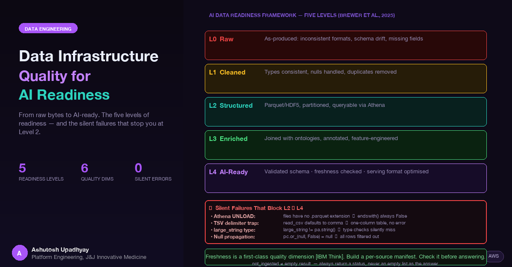

AI systems are only as good as the data pipelines that feed them. Here's how to build infrastructure that produces genuinely AI-ready data — and the silent failures that break it before training starts.
Building an AI agent system that queries 20+ scientific data sources taught me one thing more clearly than anything else: the model is not the hard part. The data infrastructure is. As Brewer et al. (2025) put it, "The performance of AI systems is fundamentally limited by the quality and readiness of the data they consume" [Brewer et al., 2025]. IBM defines six core dimensions of data quality: accuracy, completeness, consistency, timeliness, uniqueness, and validity [IBM Think]. In practice, violations of every single one of them will be silent — no exception thrown, no alert fired, just wrong answers delivered with confidence.
This is a post about those silent failures and how to prevent them. It's written from the perspective of building and operating a production AI research agent on Kubernetes, backed by a Parquet data lake on S3, a DynamoDB knowledge graph, and ingestion pipelines pulling from over twenty distinct scientific data sources.
Brewer et al. (2025) introduce a five-level AI readiness classification for scientific datasets, ranging from raw to fully AI-ready [Brewer et al., 2025]. In the context of a production agent system, the levels map like this:
| Level | State | Description |
|---|---|---|
| 0 | Raw | Data as originally produced — inconsistent formats, missing fields, schema drift between versions |
| 1 | Cleaned | Missing values handled, duplicates removed, types made consistent |
| 2 | Structured | Standard format (Parquet, HDF5), partitioned, queryable via Athena or equivalent |
| 3 | Enriched | Joined with ontologies, annotated with domain metadata, feature-engineered |
| 4 | AI-Ready | Validated schema, freshness-checked, serving format optimized for the consuming model |
Most production pipelines operate between Level 1 and Level 2. The AI agent needs Level 3 or 4. The gap between "we have the data in S3" and "the data is ready to ground an AI response" is exactly where the failures in this post live.
The most dangerous data quality problems return zero rows or incorrect data — not exceptions. An exception stops the pipeline. A silent zero marks the job as complete and moves on.
Athena UNLOAD writes Parquet files without the .parquet extension. This is documented but easy to miss. A filter using endswith(".parquet") silently returns an empty list. The pipeline reads nothing, writes nothing to the database, marks the sync window as complete, and caches it. All future syncs skip that window.
The fix isn't to filter by extension — it's to catch FileNotFoundError and verify the file's actual magic bytes, or to enumerate S3 keys without any extension filter and let pyarrow determine the format from content.
When you call read_csv on files from multiple sources without declaring an explicit schema, each file infers its own types. The same column reads as int64 from three sources and object from a fourth. Concatenating with pyarrow throws — but only if you have schema validation enabled. Without it, silent type coercion produces arithmetic that is numerically wrong but never raises.
The fix is always explicit schema declaration on read:
schema = pa.schema([
pa.field("gene_id", pa.string()),
pa.field("expression_value", pa.float64()),
pa.field("sample_count", pa.int32()),
])
table = pcsv.read_csv(path, convert_options=pcsv.ConvertOptions(column_types={
f.name: f.type for f in schema
}))PyArrow's CSV reader defaults to comma. Many scientific datasets are distributed as tab-separated .txt files. Without explicit delimiter configuration, the entire first row becomes the column name of a single-column table. No error. The downstream code reads zero matching rows and reports "no data found."
table = pcsv.read_csv(
path,
parse_options=pcsv.ParseOptions(delimiter="\t")
)The consistent theme: empty result sets are indistinguishable from absent data without a deliberate verification step. The fix is never to trust the absence — it is to verify presence explicitly before marking a pipeline run complete. A job that returns zero rows is not a successful job unless you can prove the source genuinely contained zero records.
Kleene three-valued logic is mathematically correct and operationally surprising. In pyarrow, pc.or_(null, False) returns null, not False. A filter that ORs across sparse nullable columns — standard in scientific datasets — propagates nulls and drops every row in the result.
# This silently drops rows where any column is null:
mask = pc.or_(
pc.equal(table["gene_symbol"], query_term),
pc.equal(table["alias"], query_term)
)
result = table.filter(mask) # empty if either column has nulls
# Correct: fill nulls before OR-ing
mask = pc.or_(
pc.fill_null(pc.equal(table["gene_symbol"], query_term), False),
pc.fill_null(pc.equal(table["alias"], query_term), False)
)The deeper issue is that nullable columns in scientific data are the norm, not the exception. Measurements that weren't taken, assays that weren't run, records that predate a field's existence — all produce nulls. Building filters that assume non-null is building filters that silently fail on real data.
An AI agent querying many data sources encounters many independently evolving schemas. Some return large_string where the code expects string. Some return float32 where an aggregate expects float64. IBM identifies consistency as one of the six core dimensions of data quality [IBM Think] — and schema consistency across sources is the hardest dimension to maintain as sources evolve independently.
The pyarrow large_string trap is particularly common. It appears when pyarrow auto-promotes string columns in large datasets. A type check using == pa.string() returns False for large_string inputs — silently breaking any code path that branches on string type:
# Wrong — misses large_string
def is_string_column(field: pa.Field) -> bool:
return field.type == pa.string()
# Correct
_STR_TYPES = (pa.string(), pa.large_string())
def is_string_column(field: pa.Field) -> bool:
return field.type in _STR_TYPES
def coerce_to_string(arr: pa.Array) -> pa.Array:
if arr.type == pa.large_string():
return arr.cast(pa.string())
return arrBuild explicit coercion functions and call them at ingestion boundaries — before data enters the store, not after it's read back. The ingestion layer is the right place to normalize type variance across sources.
IBM defines timeliness as one of the six core dimensions of data quality [IBM Think]. Brewer et al. (2025) identify data provenance and freshness tracking as a cross-cutting challenge at scale [Brewer et al., 2025]. In a production AI agent, freshness means: when was this data last ingested, and is that recent enough to answer the query correctly?
The architecture that worked in production:
stale_data warning with the last-ingested date, not a silent empty resultnot_ingested — explicitly, not as an empty listfrom datetime import datetime
def check_freshness(source: str, max_age_days: int = 7) -> dict:
manifest = load_manifest(source) # reads from S3 manifest file
if not manifest:
return {"status": "not_ingested", "last_updated": None}
age = (datetime.now() - manifest["last_updated"]).days
if age > max_age_days:
return {
"status": "stale",
"last_updated": manifest["last_updated"].isoformat(),
"age_days": age
}
return {
"status": "fresh",
"last_updated": manifest["last_updated"].isoformat(),
"age_days": age
}The not_ingested → empty_result conflation is the freshness equivalent of the silent zero. An empty result from a never-ingested source looks identical to an empty result from a fully-ingested source with no matching records. The AI draws the same conclusion from both: "no data available." One of those conclusions is correct. The other is wrong. Always distinguish between the two in your tool's return type.
The AI agent maintains a DynamoDB knowledge graph that extracts entities and relationships from queries and stores them for reuse. A knowledge graph entry asserting that "Gene X is associated with Disease Y" is only as current as the last time that relationship was verified from a live source.
Stale knowledge graph entries don't produce errors. They produce authoritative-sounding wrong answers. The AI cites a relationship that the underlying data no longer supports — and does so confidently, because the knowledge graph is treated as a fact store.
Design rules that worked in production:
DynamoDB reserved word trap: status, type, name, and comment are reserved words in DynamoDB condition expressions. Using them without an alias (#alias) produces a silent ClientError that looks like a permissions failure. Always use expression attribute name aliases for any of these fields.
Adapted from Brewer et al. (2025)'s two-dimensional framework of readiness levels crossed with processing stages [Brewer et al., 2025], here is how each data source type in a production AI agent system maps to readiness and risk:
| Data Source Type | Typical Readiness Level | Main Gap | What It Costs the AI |
|---|---|---|---|
| Live API (real-time) | L4 — AI-ready | Rate limits, schema changes without notice | Latency, availability risk, unexpected schema breaks |
| S3-ingested Parquet | L2–L3 — structured to enriched | Freshness decay, type inconsistency across ingestion runs | Stale answers, silent null failures in filters |
| User-uploaded files | L0–L1 — raw to cleaned | Unknown schema, unknown quality, no provenance | Garbage-in answers that look authoritative |
| Knowledge graph (DynamoDB) | L3–L4 | TTL management, relationship provenance | Authoritative-sounding wrong answers from stale facts |
The insight from this matrix is that the source with the highest nominal readiness level (live API) is also the source with the highest operational risk. The source with the lowest readiness level (user-uploaded files) produces the most damaging failures because the AI has no way to signal that the underlying data quality is unknown.
When data crosses account boundaries via DataSync (see the DataSync post for the IAM setup), the data quality implications go beyond the transfer mechanics:
Moving data is not the same as making data ready. DataSync moves bytes correctly and reliably. AI readiness requires explicit validation after the move: schema check, row count comparison against the source, Glue table registration, and a freshness manifest update. Treat each DataSync completion as the start of a validation pipeline, not the end of a data pipeline.
| Check | How to Verify |
|---|---|
| File format content matches expected structure | Read first row; check magic bytes; never filter by extension alone |
| Schema consistent across sources | Declare explicit schema on read; validate before concat; fail loudly on mismatch |
| Null handling correct in filter logic | Test filters on columns with >10% null rate before deploying |
| Delimiters explicit on all CSV/TSV reads | Audit all read_csv calls; require ParseOptions on .txt files |
| Freshness tracked per source | Freshness manifest with last_updated per source, checked at query time |
not_ingested distinct from empty result |
Tool return type is a status enum, never a bare empty list |
| Knowledge graph TTL set per relationship type | Separate DynamoDB tables for permanent (ontology) vs derived (query-extracted) facts |
| Cross-account data validated after copy | Schema check + row count comparison + Glue registration after DataSync |
The reason data quality failures are especially damaging in AI agent systems is the confidence asymmetry. A database query that returns wrong data because of a null propagation bug returns it in the same format as correct data. The agent has no signal that the rows it received are a subset of what should have matched. It reasons from incomplete evidence and presents conclusions with the same confidence it would apply to complete evidence.
Brewer et al. (2025) frame this challenge at HPC scale — scientific AI systems must handle data that is "sparse, high-dimensional, and expensive to generate" with requirements for "high-precision formats and adherence to physical constraints" [Brewer et al., 2025]. The production lesson is the same whether your scale is petabytes or gigabytes: the agent's confidence in its answers is bounded by the quality of the data it can access, and most data quality problems are invisible to the agent unless you build explicit detection into the data layer.
Build the freshness check. Build the type coercion layer. Build the not-ingested escape hatch. These aren't nice-to-haves — they're the mechanisms that let an AI agent know when to say "I don't have reliable data for this" instead of making something up from a partial result set.
not_ingested and empty result must be distinct states. Conflating them produces confident wrong answers from sources that were never populated.large_string vs string and float32 vs float64 — prevents silent arithmetic failures downstream.